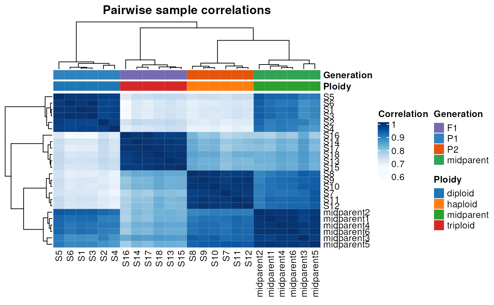
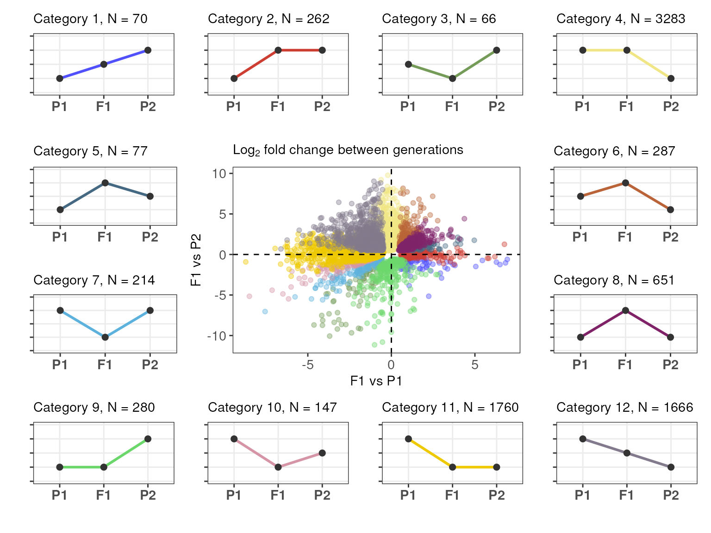
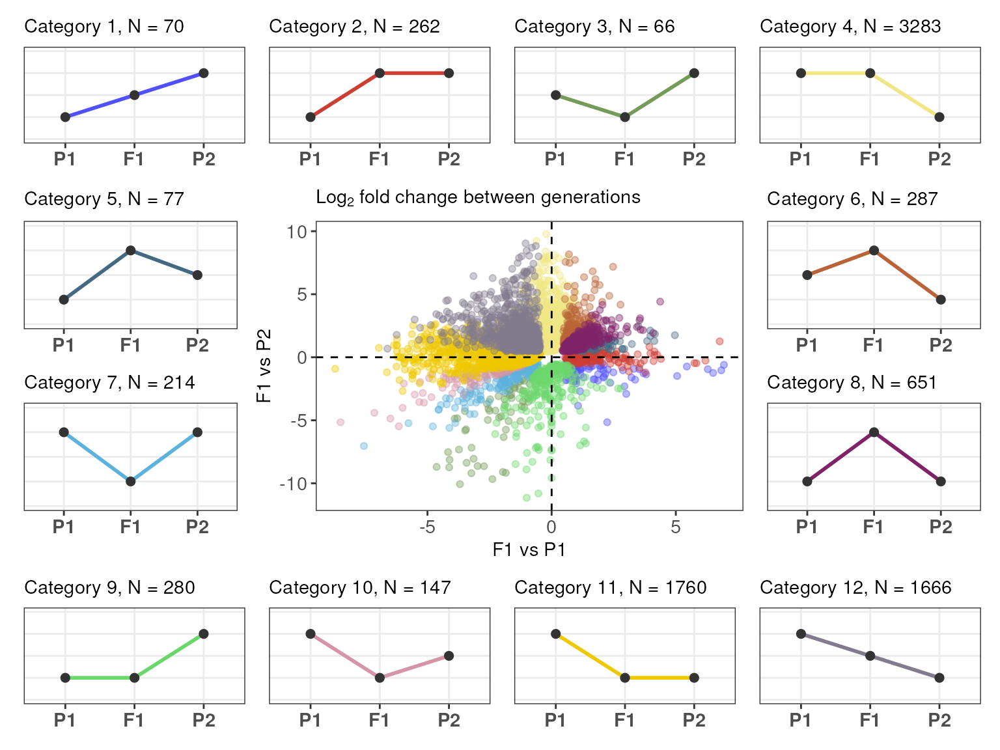

Comparative transcriptomic analysis of hybrids and their progenitors
Fabricio Almeida-Silva
VIB-UGent Center for Plant Systems Biology, Ghent, BelgiumLucas Prost-Boxoen
VIB-UGent Center for Plant Systems Biology, Ghent, BelgiumYves Van de Peer
VIB-UGent Center for Plant Systems Biology, Ghent, BelgiumSource:
vignettes/HybridExpress.Rmd
HybridExpress.RmdIntroduction
The formation of hybrids through the fusion of distinct genomes and subsequent genome duplication in cases of allopolyploidy represents a significant evolutionary event with complex effects on cellular biology, particularly gene expression. The impact of such genome mergings and duplications on transcription remain incompletely understood. To bridge this gap, we introduce HybridExpress, a comprehensive package designed to facilitate the comparative transcriptomic analysis of hybrids and their progenitor species. HybridExpress is tailored for RNA-Seq data derived from an ‘experimental trio’: the hybrid organism and its two parental species. This package offers a suite of intuitive functions enabling researchers to perform differential expression analysis with ease, generate principal component analysis (PCA) plots for visualizing gene expression trends, categorize genes into 12 distinct expression pattern groups (as in Rapp, Udall, and Wendel (2009)), and conduct in-depth functional analyses. Acknowledging the potential variability in cell and transcriptome size across species and ploidy levels, HybridExpress incorporates features for rigorous normalization of count data. Specifically, it allows for the integration of spike-in standards directly into the normalization process, ensuring accurate transcriptome size adjustments when these standards are present in the RNA-Seq count data (see full methodology in Coate (2023)). By offering these capabilities, HybridExpress provides a robust toolset for unraveling the intricate effects of genome doubling and merging on hybrid gene expression, paving the way for novel insights into the cellular biology of hybrid organisms.
Installation
HybridExpress can be installed from Bioconductor with the following code:
if(!requireNamespace('BiocManager', quietly = TRUE))
install.packages('BiocManager')
BiocManager::install("HybridExpress")
# Load package after installation
library(HybridExpress)
set.seed(123) # for reproducibilityData description
For this vignette, we will use an example data set that comprises
(unpublished) gene expression data (in counts) for Chlamydomonas
reinhardtii. In our lab, we crossed a diploid line of C.
reinhardtii (hereafter “P1”) with a haploid line (hereafter “P2”),
thus generating a triploid line through the merging of the two parental
genomes. The count matrix and sample metadata are stored in
SummarizedExperiment objects, which is the standard
Bioconductor data structure required by HybridExpress. For
instructions on how to create a SummarizedExperiment
object, check the FAQ section of this vignette.
Let’s load the example data and take a quick look at it:
library(SummarizedExperiment)
# Load data
data(se_chlamy)
# Inspect the `SummarizedExperiment` object
se_chlamy
#> class: SummarizedExperiment
#> dim: 13058 18
#> metadata(0):
#> assays(1): counts
#> rownames(13058): Cre01.g000050 Cre01.g000150 ... ERCC-00170 ERCC-00171
#> rowData names(0):
#> colnames(18): S1 S2 ... S17 S18
#> colData names(2): Ploidy Generation
## Take a look at the colData and count matrix
colData(se_chlamy)
#> DataFrame with 18 rows and 2 columns
#> Ploidy Generation
#> <character> <factor>
#> S1 diploid P1
#> S2 diploid P1
#> S3 diploid P1
#> S4 diploid P1
#> S5 diploid P1
#> ... ... ...
#> S14 triploid F1
#> S15 triploid F1
#> S16 triploid F1
#> S17 triploid F1
#> S18 triploid F1
assay(se_chlamy) |> head()
#> S1 S2 S3 S4 S5 S6 S7 S8 S9 S10 S11 S12 S13 S14
#> Cre01.g000050 31 21 26 33 19 48 17 6 13 6 10 7 31 22
#> Cre01.g000150 50 29 35 99 11 58 51 46 41 33 28 14 53 25
#> Cre01.g000200 36 26 24 29 17 36 14 15 12 8 14 7 25 24
#> Cre01.g000250 440 272 394 332 283 585 272 274 255 160 225 235 405 391
#> Cre01.g000300 1242 839 1216 1251 811 1785 1341 1306 1122 877 844 1082 1704 1739
#> Cre01.g000350 412 264 294 336 252 478 233 221 195 155 190 201 299 272
#> S15 S16 S17 S18
#> Cre01.g000050 29 22 21 16
#> Cre01.g000150 37 17 24 21
#> Cre01.g000200 24 26 18 21
#> Cre01.g000250 358 339 340 332
#> Cre01.g000300 1524 1720 1517 1243
#> Cre01.g000350 276 324 246 275
table(se_chlamy$Ploidy, se_chlamy$Generation)
#>
#> F1 P1 P2
#> diploid 0 6 0
#> haploid 0 0 6
#> triploid 6 0 0As you can see, the count matrix contains 13058 genes and 18 samples, with 6 replicates for parent 1 (P1, diploid), 6 replicates for parent 2 (P2, haploid), and 6 replicates for the progeny (F1, triploid).
Adding midparent expression values
First of all, you’d want to add in your count matrix in
silico samples that contain the expression values of the midparent.
This can be done with the function
add_midparent_expression(), which takes a random sample
pair (one sample from each parent, sampling without replacement) and
calculates the midparent expression value in one of three ways:
- Mean (default): get the mean expression of the two samples.
- Sum: get the sum of the two samples.
- Weighted mean: get the weighted mean of the two samples by multiplying the expression value of each parent by a weight. Typically, this can be used if the two parents have different ploidy levels, and the weights would correspond to the ploidy level of each parent.
For this function, besides specifying the method to obtain the
midparent expression values (i.e., “mean”, “sum”, or “weightedmean”),
users must also specify the name of the column in colData
that contains information about the generations (default:
“Generation”), as well as the levels corresponding to each
parent (default: “P1” and “P2” for parents 1 and 2,
respectively).
# Add midparent expression using the mean of the counts
se <- add_midparent_expression(se_chlamy)
head(assay(se))
#> S1 S2 S3 S4 S5 S6 S7 S8 S9 S10 S11 S12 S13 S14
#> Cre01.g000050 31 21 26 33 19 48 17 6 13 6 10 7 31 22
#> Cre01.g000150 50 29 35 99 11 58 51 46 41 33 28 14 53 25
#> Cre01.g000200 36 26 24 29 17 36 14 15 12 8 14 7 25 24
#> Cre01.g000250 440 272 394 332 283 585 272 274 255 160 225 235 405 391
#> Cre01.g000300 1242 839 1216 1251 811 1785 1341 1306 1122 877 844 1082 1704 1739
#> Cre01.g000350 412 264 294 336 252 478 233 221 195 155 190 201 299 272
#> S15 S16 S17 S18 midparent1 midparent2 midparent3 midparent4
#> Cre01.g000050 29 22 21 16 18 27 14 20
#> Cre01.g000150 37 17 24 21 32 46 38 56
#> Cre01.g000200 24 26 18 21 19 22 20 18
#> Cre01.g000250 358 339 340 332 310 372 273 284
#> Cre01.g000300 1524 1720 1517 1243 1030 1331 1072 1166
#> Cre01.g000350 276 324 246 275 242 316 242 268
#> midparent5 midparent6
#> Cre01.g000050 18 22
#> Cre01.g000150 31 46
#> Cre01.g000200 16 24
#> Cre01.g000250 278 348
#> Cre01.g000300 1076 1182
#> Cre01.g000350 242 304
# Alternative 1: using the sum of the counts
add_midparent_expression(se_chlamy, method = "sum") |>
assay() |>
head()
#> S1 S2 S3 S4 S5 S6 S7 S8 S9 S10 S11 S12 S13 S14
#> Cre01.g000050 31 21 26 33 19 48 17 6 13 6 10 7 31 22
#> Cre01.g000150 50 29 35 99 11 58 51 46 41 33 28 14 53 25
#> Cre01.g000200 36 26 24 29 17 36 14 15 12 8 14 7 25 24
#> Cre01.g000250 440 272 394 332 283 585 272 274 255 160 225 235 405 391
#> Cre01.g000300 1242 839 1216 1251 811 1785 1341 1306 1122 877 844 1082 1704 1739
#> Cre01.g000350 412 264 294 336 252 478 233 221 195 155 190 201 299 272
#> S15 S16 S17 S18 midparent1 midparent2 midparent3 midparent4
#> Cre01.g000050 29 22 21 16 43 26 58 46
#> Cre01.g000150 37 17 24 21 86 25 86 140
#> Cre01.g000200 24 26 18 21 38 24 50 41
#> Cre01.g000250 358 339 340 332 666 518 810 587
#> Cre01.g000300 1524 1720 1517 1243 2557 1893 2629 2373
#> Cre01.g000350 276 324 246 275 527 453 668 531
#> midparent5 midparent6
#> Cre01.g000050 37 27
#> Cre01.g000150 96 62
#> Cre01.g000200 51 34
#> Cre01.g000250 714 432
#> Cre01.g000300 2548 1716
#> Cre01.g000350 633 419
# Alternative 2: using the weighted mean of the counts (weights = ploidy)
w <- c(2, 1) # P1 = diploid; P2 = haploid
add_midparent_expression(se_chlamy, method = "weightedmean", weights = w) |>
assay() |>
head()
#> S1 S2 S3 S4 S5 S6 S7 S8 S9 S10 S11 S12 S13 S14
#> Cre01.g000050 31 21 26 33 19 48 17 6 13 6 10 7 31 22
#> Cre01.g000150 50 29 35 99 11 58 51 46 41 33 28 14 53 25
#> Cre01.g000200 36 26 24 29 17 36 14 15 12 8 14 7 25 24
#> Cre01.g000250 440 272 394 332 283 585 272 274 255 160 225 235 405 391
#> Cre01.g000300 1242 839 1216 1251 811 1785 1341 1306 1122 877 844 1082 1704 1739
#> Cre01.g000350 412 264 294 336 252 478 233 221 195 155 190 201 299 272
#> S15 S16 S17 S18 midparent1 midparent2 midparent3 midparent4
#> Cre01.g000050 29 22 21 16 25 29 39 22
#> Cre01.g000150 37 17 24 21 27 30 29 16
#> Cre01.g000200 24 26 18 21 27 32 33 21
#> Cre01.g000250 358 339 340 332 181 232 270 210
#> Cre01.g000300 1524 1720 1517 1243 1453 1576 1753 1532
#> Cre01.g000350 276 324 246 275 166 202 223 165
#> midparent5 midparent6
#> Cre01.g000050 26 17
#> Cre01.g000150 48 15
#> Cre01.g000200 29 17
#> Cre01.g000250 202 148
#> Cre01.g000300 1705 1125
#> Cre01.g000350 186 136We will proceed our analyses with the midparent expression values
obtained from the mean of the counts, stored in the se
object.
Exploratory data analyses
Next, you can perform exploratory analyses of sample clustering to verify if samples group as expected. With HybridExpress, this can be performed using two functions:
-
pca_plot(): creates principal component analysis (PCA) plots, with colors and shapes (optional) mapped to levels ofcolDatavariables; -
plot_samplecor(): plots a heatmap of hierarchically clustered pairwise sample correlations.
Let’s start with the PCA plot:
# For colData rows with missing values (midparent samples), add "midparent"
se$Ploidy[is.na(se$Ploidy)] <- "midparent"
se$Generation[is.na(se$Generation)] <- "midparent"
# Create PCA plot
pca_plot(se, color_by = "Generation", shape_by = "Ploidy", add_mean = TRUE)
#> converting counts to integer modeIn the plot above, each data point corresponds to a sample, and
colors and shapes are mapped to levels of the variables specified in the
arguments color_by and shape_by, respectively.
Besides, by specifying add_mean = TRUE, we added a diamond
shape indicating the mean PC coordinates based on the variable in
color_by (here, “Generation”).
Now, let’s plot the heatmap of sample correlations:
# Plot a heatmap of sample correlations
plot_samplecor(se)
#> converting counts to integer mode
We can see that samples group well together both in the PCA plot and in the correlation heatmap.
Of note, both pca_plot() and
plot_samplecor() use only the top 500 genes with the
highest variances to create the plot. This is because genes with low
variances (i.e., genes that do not vary much across samples) are
uninformative and typically only add noise. You can change this number
(to use more or less genes) in the ntop argument of both
functions.
Identifying differentially expressed genes between hybrids and their parents
To compare gene expression levels of hybrids to their progenitor
species, you can use the function get_deg_list(). This
function performs differential expression analyses using DESeq2 and
returns a list of data frames with gene-wise test statistics for the
following contrasts:
-
P2_vs_P1: parent 2 (numerator) versus parent 1 (denominator). -
F1_vs_P1: hybrid (numerator) versus parent 1 (denominator). -
F1_vs_P2: hybrid (numerator) versus parent 2 (denominator). -
F1_vs_midparent: hybrid (numerator) vs midparent (denominator).
By default, count data are normalized by library size using the
standard normalization process in DESeq2.
However, if spike-in standards are included in the count matrix, you can
use them for normalization by setting spikein_norm = TRUE
and specifying the pattern used to indicate rows that contain spike-ins
(usually they start with ERCC). In our example data set,
spike-in standards are available in the last rows of the count
matrix.
# Show last rows of the count matrix
assay(se) |>
tail()
#> S1 S2 S3 S4 S5 S6 S7 S8 S9 S10 S11 S12 S13
#> ERCC-00163 74 75 55 77 51 84 132 127 93 108 79 102 66
#> ERCC-00164 0 4 0 1 4 1 6 4 1 4 3 2 5
#> ERCC-00165 147 139 87 165 118 179 236 246 139 218 176 145 118
#> ERCC-00168 2 5 2 2 2 6 5 1 1 5 0 3 4
#> ERCC-00170 97 95 73 101 70 118 186 148 110 167 110 103 72
#> ERCC-00171 4644 4959 3554 5357 4170 5946 8207 7915 4992 7843 6455 5884 4537
#> S14 S15 S16 S17 S18 midparent1 midparent2 midparent3 midparent4
#> ERCC-00163 67 62 80 88 47 67 96 101 90
#> ERCC-00164 4 3 5 4 2 2 2 4 2
#> ERCC-00165 143 115 185 192 136 132 198 192 155
#> ERCC-00168 6 2 11 5 2 1 6 3 2
#> ERCC-00170 99 64 121 103 84 92 142 122 102
#> ERCC-00171 5665 4598 6168 5771 4747 5004 6894 6437 5620
#> midparent5 midparent6
#> ERCC-00163 92 84
#> ERCC-00164 5 0
#> ERCC-00165 177 143
#> ERCC-00168 4 2
#> ERCC-00170 128 104
#> ERCC-00171 6188 4818Now, we will use get_deg_list() to get differentially
expressed genes (DEGs) for each contrast while using spike-in
normalization.
# Get a list of differentially expressed genes for each contrast
deg_list <- get_deg_list(se, spikein_norm = TRUE, spikein_pattern = "ERCC")
#> converting counts to integer mode
#> using pre-existing size factors
#> estimating dispersions
#> gene-wise dispersion estimates
#> mean-dispersion relationship
#> final dispersion estimates
#> fitting model and testing
# Inspecting the output
## Getting contrast names
names(deg_list)
#> [1] "P2_vs_P1" "F1_vs_P1" "F1_vs_P2" "F1_vs_midparent"
## Accessing gene-wise test statistics for contrast `F1_vs_P1`
head(deg_list$F1_vs_P1)
#> baseMean log2FoldChange lfcSE stat pvalue
#> Cre01.g000450 39.59273 -1.1632346 0.2165407 -5.371898 7.791211e-08
#> Cre01.g000750 103.10296 0.8807307 0.1842856 4.779162 1.760270e-06
#> Cre01.g000900 471.44084 0.6807925 0.1980730 3.437079 5.880239e-04
#> Cre01.g001000 10.34574 -6.6304915 0.9631384 -6.884256 5.809030e-12
#> Cre01.g001100 453.87151 -0.6457115 0.1506903 -4.285025 1.827187e-05
#> Cre01.g001200 159.03643 0.7231060 0.1946090 3.715685 2.026536e-04
#> padj
#> Cre01.g000450 4.653531e-07
#> Cre01.g000750 8.329159e-06
#> Cre01.g000900 1.707442e-03
#> Cre01.g001000 6.659069e-11
#> Cre01.g001100 7.200448e-05
#> Cre01.g001200 6.453951e-04
## Counting the number of DEGs per contrast
sapply(deg_list, nrow)
#> P2_vs_P1 F1_vs_P1 F1_vs_P2 F1_vs_midparent
#> 8698 5476 7350 4348To summarize the frequencies of up- and down-regulated genes per
contrast in a single data frame, use the function
get_deg_counts().
# Get a data frame with DEG frequencies for each contrast
deg_counts <- get_deg_counts(deg_list)
deg_counts
#> contrast up down total perc_up perc_down perc_total
#> 1 P2_vs_P1 828 7870 8698 6.4 60.7 67.1
#> 2 F1_vs_P1 1471 4005 5476 11.3 30.9 42.2
#> 3 F1_vs_P2 6487 863 7350 50.0 6.7 56.7
#> 4 F1_vs_midparent 2620 1728 4348 20.2 13.3 33.5It is important to note that the columns perc_up,
perc_down, and perc_total show the percentages
of up-regulated, down-regulated, and all differentially expressed genes
relative to the total number of genes in the count matrix. The total
number of genes in the count matrix is stored in the ngenes
attribute of the list returned by get_deg_list():
attributes(deg_list)
#> $names
#> [1] "P2_vs_P1" "F1_vs_P1" "F1_vs_P2" "F1_vs_midparent"
#>
#> $ngenes
#> [1] 12966However, since the count matrix usually does not include all genes in
the genome (e.g., lowly expressed genes and genes with low variance are
usually filtered out), the percentages in perc_up,
perc_down, and perc_total are not relative to
the total number of genes in the genome. To use the total number of
genes in the genome as the reference, we need to update the
ngenes attribute of the DEG list with the appropriate
number as follows:
# Total number of genes in the C. reinhardtii genome (v6.1): 16883
attributes(deg_list)$ngenes <- 16883Then, we can run get_deg_counts() again to get the
percentages relative to the total number of genes in the genome.
deg_counts <- get_deg_counts(deg_list)
deg_counts
#> contrast up down total perc_up perc_down perc_total
#> 1 P2_vs_P1 828 7870 8698 4.9 46.6 51.5
#> 2 F1_vs_P1 1471 4005 5476 8.7 23.7 32.4
#> 3 F1_vs_P2 6487 863 7350 38.4 5.1 43.5
#> 4 F1_vs_midparent 2620 1728 4348 15.5 10.2 25.8Finally, we can summarize everything in a single publication-ready
figure using the plot plot_expression_triangle(), which
shows the ‘experimental trio’ (i.e., hybrid and its progenitors) as a
triangle, with the frequencies of DEGs indicated.
# Plot expression triangle
plot_expression_triangle(deg_counts)
This figure is commonly used in publications, and it was inspired by Rapp, Udall, and Wendel (2009). For each edge (line), numbers in the middle (in bold) indicate the frequency of all DEGs, and numbers at the ends (close to boxes) indicate the frequency of up-regulated genes in each generation. For instance, the figure above shows that, for the contrast between F1 and P1, there are 5476 DEGs (32.4% of the genome), of which 1471 are up-regulated in F1, and 4005 are up-regulated in P1.
For a custom figure, you can also specify your own color palette and labels for the boxes. For example:
# Create vectors (length 4) of colors and box labels
pal <- c("springgreen4", "darkorange3", "mediumpurple4", "mediumpurple3")
labels <- c("Parent 1\n(2n)", "Parent 2\n(n)", "Progeny\n(3n)", "Midparent")
plot_expression_triangle(deg_counts, palette = pal, box_labels = labels)Expression-based gene classification
After identifying DEGs for different contrasts, you’d typically want
to classify your genes into expression partitions based on their
expression patterns. This can be performed with the function
expression_partitioning(), which classifies genes into one
of the 12 categories as in Rapp,
Udall, and Wendel (2009), and into 5 major
classes that summarize the 12 categories. The five
classes are:
- Transgressive up-regulation (UP): gene is up-regulated in the hybrid as compared to both parents.
- Transgressive down-regulation (DOWN): gene is down-regulated in the hybrid as compared to both parents.
- Additivity (ADD): gene expression in the hybrid is the mean of both parents (additive effect).
- Expression-level dominance toward parent 1 (ELD_P1): gene expression in the hybrid is the same as in parent 1, but different from parent 2.
- Expression-level dominance toward parent 2 (ELD_P2): gene expression in the hybrid is the same as in parent 2, but different from parent 1.
# Classify genes in expression partitions
exp_partitions <- expression_partitioning(deg_list)
# Inspect the output
head(exp_partitions)
#> Gene Category Class lFC_F1_vs_P1 lFC_F1_vs_P2
#> 1 Cre01.g003650 1 ADD 0.7838125 -1.0484464
#> 2 Cre01.g005150 1 ADD 1.0473362 -0.5041601
#> 3 Cre01.g008600 1 ADD 5.0518384 -1.4840829
#> 4 Cre01.g013500 1 ADD 2.1099265 -1.5329846
#> 5 Cre01.g034850 1 ADD 1.5838851 -0.7611868
#> 6 Cre01.g800005 1 ADD 1.4928449 -0.9315119
# Count number of genes per category
table(exp_partitions$Category)
#>
#> 1 2 3 4 5 6 7 8 9 10 11 12
#> 70 262 66 3283 77 287 214 651 280 147 1760 1666
# Count number of genes per class
table(exp_partitions$Class)
#>
#> UP DOWN ADD ELD_P1 ELD_P2
#> 1015 427 1736 3563 2022To visualize the expression partitions as a scatter plot of
expression divergences, you can use the function
plot_expression_partitions().
# Plot partitions as a scatter plot of divergences
plot_expression_partitions(exp_partitions, group_by = "Category")
By default, genes are grouped by Category. However, you
can also group genes by Class as follows:
# Group by `Class`
plot_expression_partitions(exp_partitions, group_by = "Class")
You can also visualize the frequencies of genes in each partition
with the function plot_partition_frequencies().
# Visualize frequency of genes in each partition
## By `Category` (default)
plot_partition_frequencies(exp_partitions)
## By `Class`
plot_partition_frequencies(exp_partitions, group_by = "Class")Session information
This document was created under the following conditions:
#> ─ Session info ───────────────────────────────────────────────────────────────
#> setting value
#> version R version 4.3.1 (2023-06-16)
#> os Ubuntu 22.04.3 LTS
#> system x86_64, linux-gnu
#> ui X11
#> language en
#> collate en_US.UTF-8
#> ctype en_US.UTF-8
#> tz UTC
#> date 2023-11-04
#> pandoc 3.1.1 @ /usr/local/bin/ (via rmarkdown)
#>
#> ─ Packages ───────────────────────────────────────────────────────────────────
#> package * version date (UTC) lib source
#> abind 1.4-5 2016-07-21 [1] CRAN (R 4.3.1)
#> Biobase * 2.62.0 2023-10-24 [1] Bioconductor
#> BiocGenerics * 0.48.1 2023-11-01 [1] Bioconductor
#> BiocManager 1.30.22 2023-08-08 [1] CRAN (R 4.3.1)
#> BiocParallel 1.36.0 2023-10-24 [1] Bioconductor
#> BiocStyle * 2.30.0 2023-10-24 [1] Bioconductor
#> bitops 1.0-7 2021-04-24 [1] CRAN (R 4.3.1)
#> bookdown 0.36 2023-10-16 [1] CRAN (R 4.3.1)
#> bslib 0.5.1 2023-08-11 [2] CRAN (R 4.3.1)
#> cachem 1.0.8 2023-05-01 [2] CRAN (R 4.3.1)
#> circlize 0.4.15 2022-05-10 [1] CRAN (R 4.3.1)
#> cli 3.6.1 2023-03-23 [2] CRAN (R 4.3.1)
#> clue 0.3-65 2023-09-23 [1] CRAN (R 4.3.1)
#> cluster 2.1.4 2022-08-22 [3] CRAN (R 4.3.1)
#> codetools 0.2-19 2023-02-01 [3] CRAN (R 4.3.1)
#> colorspace 2.1-0 2023-01-23 [1] CRAN (R 4.3.1)
#> ComplexHeatmap 2.18.0 2023-10-24 [1] Bioconductor
#> crayon 1.5.2 2022-09-29 [2] CRAN (R 4.3.1)
#> DelayedArray 0.28.0 2023-10-24 [1] Bioconductor
#> desc 1.4.2 2022-09-08 [2] CRAN (R 4.3.1)
#> DESeq2 1.42.0 2023-10-24 [1] Bioconductor
#> digest 0.6.33 2023-07-07 [2] CRAN (R 4.3.1)
#> doParallel 1.0.17 2022-02-07 [1] CRAN (R 4.3.1)
#> dplyr 1.1.3 2023-09-03 [1] CRAN (R 4.3.1)
#> evaluate 0.23 2023-11-01 [1] CRAN (R 4.3.1)
#> fansi 1.0.5 2023-10-08 [2] CRAN (R 4.3.1)
#> farver 2.1.1 2022-07-06 [1] CRAN (R 4.3.1)
#> fastmap 1.1.1 2023-02-24 [2] CRAN (R 4.3.1)
#> foreach 1.5.2 2022-02-02 [1] CRAN (R 4.3.1)
#> fs 1.6.3 2023-07-20 [2] CRAN (R 4.3.1)
#> generics 0.1.3 2022-07-05 [1] CRAN (R 4.3.1)
#> GenomeInfoDb * 1.38.0 2023-10-24 [1] Bioconductor
#> GenomeInfoDbData 1.2.11 2023-11-02 [1] Bioconductor
#> GenomicRanges * 1.54.1 2023-10-29 [1] Bioconductor
#> GetoptLong 1.0.5 2020-12-15 [1] CRAN (R 4.3.1)
#> ggplot2 3.4.4 2023-10-12 [1] CRAN (R 4.3.1)
#> GlobalOptions 0.1.2 2020-06-10 [1] CRAN (R 4.3.1)
#> glue 1.6.2 2022-02-24 [2] CRAN (R 4.3.1)
#> gtable 0.3.4 2023-08-21 [1] CRAN (R 4.3.1)
#> highr 0.10 2022-12-22 [2] CRAN (R 4.3.1)
#> htmltools 0.5.7 2023-11-03 [1] CRAN (R 4.3.1)
#> HybridExpress * 0.99.0 2023-11-04 [1] Bioconductor
#> IRanges * 2.36.0 2023-10-24 [1] Bioconductor
#> iterators 1.0.14 2022-02-05 [1] CRAN (R 4.3.1)
#> jquerylib 0.1.4 2021-04-26 [2] CRAN (R 4.3.1)
#> jsonlite 1.8.7 2023-06-29 [2] CRAN (R 4.3.1)
#> knitr 1.45 2023-10-30 [1] CRAN (R 4.3.1)
#> labeling 0.4.3 2023-08-29 [1] CRAN (R 4.3.1)
#> lattice 0.21-9 2023-10-01 [2] CRAN (R 4.3.1)
#> lifecycle 1.0.3 2022-10-07 [2] CRAN (R 4.3.1)
#> locfit 1.5-9.8 2023-06-11 [1] CRAN (R 4.3.1)
#> magrittr 2.0.3 2022-03-30 [2] CRAN (R 4.3.1)
#> Matrix 1.6-1.1 2023-09-18 [2] CRAN (R 4.3.1)
#> MatrixGenerics * 1.14.0 2023-10-24 [1] Bioconductor
#> matrixStats * 1.0.0 2023-06-02 [1] CRAN (R 4.3.1)
#> memoise 2.0.1 2021-11-26 [2] CRAN (R 4.3.1)
#> munsell 0.5.0 2018-06-12 [1] CRAN (R 4.3.1)
#> patchwork 1.1.3 2023-08-14 [1] CRAN (R 4.3.1)
#> pillar 1.9.0 2023-03-22 [2] CRAN (R 4.3.1)
#> pkgconfig 2.0.3 2019-09-22 [2] CRAN (R 4.3.1)
#> pkgdown 2.0.7 2022-12-14 [1] CRAN (R 4.3.1)
#> png 0.1-8 2022-11-29 [1] CRAN (R 4.3.1)
#> purrr 1.0.2 2023-08-10 [2] CRAN (R 4.3.1)
#> R6 2.5.1 2021-08-19 [2] CRAN (R 4.3.1)
#> ragg 1.2.6 2023-10-10 [2] CRAN (R 4.3.1)
#> RColorBrewer 1.1-3 2022-04-03 [1] CRAN (R 4.3.1)
#> Rcpp 1.0.11 2023-07-06 [2] CRAN (R 4.3.1)
#> RCurl 1.98-1.13 2023-11-02 [1] CRAN (R 4.3.1)
#> rjson 0.2.21 2022-01-09 [1] CRAN (R 4.3.1)
#> rlang 1.1.2 2023-11-04 [1] CRAN (R 4.3.1)
#> rmarkdown 2.25 2023-09-18 [1] CRAN (R 4.3.1)
#> rprojroot 2.0.3 2022-04-02 [2] CRAN (R 4.3.1)
#> S4Arrays 1.2.0 2023-10-24 [1] Bioconductor
#> S4Vectors * 0.40.1 2023-10-26 [1] Bioconductor
#> sass 0.4.7 2023-07-15 [2] CRAN (R 4.3.1)
#> scales 1.2.1 2022-08-20 [1] CRAN (R 4.3.1)
#> sessioninfo 1.2.2 2021-12-06 [2] CRAN (R 4.3.1)
#> shape 1.4.6 2021-05-19 [1] CRAN (R 4.3.1)
#> SparseArray 1.2.0 2023-10-24 [1] Bioconductor
#> stringi 1.7.12 2023-01-11 [2] CRAN (R 4.3.1)
#> stringr 1.5.0 2022-12-02 [2] CRAN (R 4.3.1)
#> SummarizedExperiment * 1.32.0 2023-10-24 [1] Bioconductor
#> systemfonts 1.0.5 2023-10-09 [2] CRAN (R 4.3.1)
#> textshaping 0.3.7 2023-10-09 [2] CRAN (R 4.3.1)
#> tibble 3.2.1 2023-03-20 [2] CRAN (R 4.3.1)
#> tidyselect 1.2.0 2022-10-10 [1] CRAN (R 4.3.1)
#> utf8 1.2.4 2023-10-22 [1] CRAN (R 4.3.1)
#> vctrs 0.6.4 2023-10-12 [2] CRAN (R 4.3.1)
#> withr 2.5.2 2023-10-30 [1] CRAN (R 4.3.1)
#> xfun 0.41 2023-11-01 [1] CRAN (R 4.3.1)
#> XVector 0.42.0 2023-10-24 [1] Bioconductor
#> yaml 2.3.7 2023-01-23 [2] CRAN (R 4.3.1)
#> zlibbioc 1.48.0 2023-10-24 [1] Bioconductor
#>
#> [1] /__w/_temp/Library
#> [2] /usr/local/lib/R/site-library
#> [3] /usr/local/lib/R/library
#>
#> ──────────────────────────────────────────────────────────────────────────────